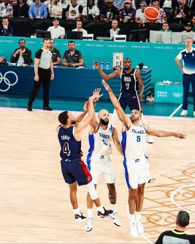

Gravity in sports is very similar to gravity in the real world. It is how much pull you have on the enemies defensive tactics and the ability to draw opposing defenders out of position by simply standing on the court/field with or without the ball. It helps measure how much of a threat a player is by them attracting the defense, which would then create space and opportunities for their teammates. Gravity in sports is split between two groups; those who pull because of their positioning and their high sport iq, and those who pull because of their flair and elite skills.
Players that generate gravity through their flair causes different problems for the defense. They generate their gravity through their unpredictability, and because of that the defense doesn't know where to commit as if they commit to one side, it leaves another option to be exploited. Example of this would be Kyrie Irving; unpredictability from change of speed dribbling left or right, pull up jumper, driving to the basket with the ability to finish with either hand, playmaking ability to escape defenders if needed with a pass. They are too many possibilities for the defenders to commit to one area, as he can just go with the other options. It creates a decision problem. Another great example would be Lamar Jackson. There are simply too many options for him to be effective. The best running game for a quaterback in the league, as well as insane arm talent, and can read the defense as well. If they try to pressure him, he can pass to a reciever that has opened up, and if they don't he can simply gain some yards himself. The problem is that these type of players create too many problems for the defense to consider, as well as create unpredictable space for their own team to exploit.
The other type of players to generate gravity are the players that stick to the fundamentals. They create problems for the defense by being so good at one thing, or a small amount of things that even though they know the threat is coming, they still have to draw massive amounts of attention to it, just to try to stop it. Most of the time, the opponent knows whats going to happen. They just can't allow it, and in the process of doing so, creates attracts more of the defense which leaves gaps for the player's team to exploit. An example of this would be Klay Thompson; the defender knows what he is going to do. He is going to get open and shoot threes, and they can't allow that. The gravity of Klay comes from the fact that he is one of the best three point shooters of all time, so even if they are a nanosecond late, Klay is up three points. So, because he is so good at one thing, they try to stop him, so they have to chase him around the screens and when he inevitably gets open, they have to double team or else it's an open three; which would inturn leave one player open. That's the problem with them that even though they don't show off with skills or showboat, just their known one ability is enough to cause problems as they can't ignore it, so they have to allocate more just to stop it.
Fundamentals